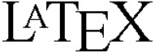
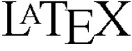
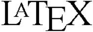
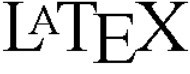

新千年版前言
自理查德·费恩曼在加利福尼亚理工学院讲授物理学导论课程以来，已经过去快50年了。这次讲课产生了这三卷《费恩曼物理学讲义》。在这50年中，我们对物理世界的认识已经大大改变了，但是《费恩曼物理学讲义》的价值仍旧存在。由于费恩曼对物理学独到的领悟和教学方法，费恩曼的讲义今天仍像第一次出版时那样具有权威性。这些教本已在全世界范围内被初学者，也被成熟的物理学家研读；它们已被翻译成至少12种语言，仅仅英语的印刷就有150万册以上。或许至今为止还没有其他物理学书籍有这样广泛的影响。
新千年版迎来了《费恩曼物理学讲义（FLP）》的新时代：21世纪的电子出版物时代。FLP改变为eFLP，本文和方程式用 电子排字语言表示，所有的插图用现代绘图软件重画。
这一版的印刷本的效果并没有什么特别之处，它看上去几乎完全和学物理的学生都已熟悉并热爱的最初的红色书一样。主要的差别在于扩大并改进了的索引，以前的版本第一次印刷以来的50年内读者们发现的885篇错误的改正，以及改正未来的读者可能发现的错误的便利。关于这一点我以后还要谈到。
这一版的电子书版本以及加强电子版不同于20世纪的大多数技术书籍的电子书，如果把这种书籍的方程式、插图、有时甚至包括课文，放大以后都成为多个像素。新千年版的 稿本有可能得到最高质量的电子书，书页上的所有的面貌特征（除了照片）都可以无限制地放大而始终保持其精确的形状和细锐度。带有费恩曼原初讲课的声音和黑板照相、还带有和其他资源的联接的加强电子版是新事物，（假如费恩曼还在世的话）这一定会使他极其高兴。 [1]
费恩曼讲义的回忆
这三卷书是一套完备的教科书。它们也是费恩曼在1961—1964年给本科生上物理学课的历史记录，这是加利福尼亚理工学院的一年级和二年级学生，无论他们主修什么课程，都必须上的一门课。
读者们可能和我一样很想知道，费恩曼的讲课对听课的学生的影响如何。费恩曼在这几本书的前言中提供了多少有些负面的看法。他写道：“我不认为我对学生做得很好”。马修·桑兹在他的《费恩曼物理学指导手册》的回忆文章中给出了完全正面的观点。出于好奇，2005年春天，我和从费恩曼1961—1964班级（大约150个学生）中半随机地挑选一组17位学生通过电子邮件或面谈联系——这些学生中有些在课堂上有很大的困难，而有一些很容易掌握课程；他们主修生物学，化学，工程，地理学，数学及天文学，还包括物理学。
经过了这些年，可能已经在他们的记忆中抹上了欣快的色彩，但大约有80%回忆起费恩曼的讲课觉得是他们大学时光中精彩的事件。“就像上教堂。”听课是“一个变形改造的经历”，“一生的重要阅历，或许是我从加利福尼亚理工学院得到的最重要的东西。”“我是一个主修生物学的学生，但费恩曼的讲课在我的本科生经历中就像在最高点一样突出……虽然我必须承认当时我不会做家庭作业并且总是交不出作业。”“我当时是课堂上最没有希望的学生之一，但我从不缺一堂课……我记得并仍旧感觉到费恩曼对于发现的快乐……他的讲课具有一种……感情上的冲击效果，这在印刷的讲义中可能失去了。”
相反，好些学生，主要由于以下两方面问题，而具有负面的记忆。（ⅰ）“你无法通过上课学会做家庭作业。费恩曼太灵活了——他熟知解题技巧和可以作哪些近似，他还具有基于经验和天赋的直觉，这是初学的学生所不具备的。”费恩曼和同事们在讲课过程中知道这一缺陷，做了一些工作，部分材料已编入《费恩曼物理学指导手册》：费恩曼的三次习题课以及罗伯特·莱顿和罗各斯·沃格特（Rochus Vogt）选编的一组习题和答案。（ⅱ）由于不知道下一节课可能会讨论什么内容产生一种不安全感，缺少与讲课内容有任何关系的教科书或参考书，其结果是我们无法预习，这是十分令人丧气的……我发现在课堂上的演讲是令人激动但却是很难懂，但（当我重建这些细节的时候发现）它们只是外表上像梵文一样难懂。当然，有了这三本《费恩曼物理学讲义》，这些问题已经得到了解决。从那以后的许多年，它们就成了加州理工学院学生学习的教科书，直到今天它们作为费恩曼的伟大遗产还保持着活力。
改错的历史
《费恩曼物理学讲义》是费恩曼和他的合作者罗伯特·莱顿及马修·桑兹非常仓促之中创作出来的，根据费恩曼的讲课的录音带和黑板照相（这些都编入这新千年版的增强电子版）加工扩充而成 [2] 。由于要求费恩曼、莱顿和桑兹高速度工作，不可避免地有许多错误隐藏在第一版中。在以后几年中，费恩曼收集了加州理工学院的学生和同事以及世界各地的读者发现的、长长的、确定的错误列表。在20世纪60年代和70年代早期，费恩曼在他的紧张的生活中抽出时间来核实第1卷和第2卷中确认的大多数，不是全部错误，并在以后的印刷中加入了勘误表。但是费恩曼的责任感从来没有高到超过发现新事物的激情而促使他处理第3卷中的错误。 [3] 在1988年他过早的逝世后，所有三卷的勘误表都存放到加州理工学院档案馆，它们躺在那里被遗忘了。
2002年，拉尔夫·莱顿（Ralph Leighton）（已故罗伯特·莱顿的儿子，费恩曼的同胞）告诉我，拉尔夫的朋友迈克尔·戈特里勃（Michael Gottlieb）汇编了老的和长长的新的勘误表。莱顿建议加州理工学院编纂一个改正所有错误的《费恩曼物理学讲义》的新版本，并将他和戈特里勃当时正在编写的新的辅助材料——《费恩曼物理学指导手册》一同出版。
费恩曼是我心目中的英雄，也是亲密的朋友。当我看到勘误表和提交的新的一卷的内容时，我很快就代表加州理工学院（这是费恩曼长时期的学术之家，他、莱顿和桑兹已将《费恩曼物理学讲义》所有的出版权利和责任都委托给她了）同意了。一年半以后，经过戈特里勃细微工作和迈克尔·哈特尔（Micheal Hartl）（一位优秀的加州理工学院博士后工作者，他审校了加上新的一卷的所有的错误）仔细的校阅，《费恩曼物理学讲义》的2005限定版诞生了，其中包括大约200处勘误。同时发行了费恩曼、戈特里勃和莱顿的《费恩曼物理学指导手册》。
我原来以为这一版是“定本”了。出乎我意料的是全世界读者热情响应。戈特里勃呼吁大家鉴别出更多错误，并通过创建的费恩曼讲义网站www.feynmanlectures.info提交给他。从那时起的五年内，又提交了965处新发现的错误，这些都是从戈特里勃、哈特尔和纳特·博德（Nate Bode）（一位优秀的加州理工学院研究生，他是继哈特尔之后的加州理工学院的错误检查员）的仔细校对中遗漏的。这些965处被检查出来的错误中80处在《定本》的第四次印刷（2006年8月）中改正了，余下的885处在这一新千年版的第一次印刷中被改正（第1卷中332处，第2卷中263处，第3卷200处） [4] ，这些错误的详情可参看www.feynman lectures.info.
显然，使《费恩曼物理学讲义》没有错误已成为全世界的共同事业。我代表加州理工学院感谢2005年以来作了贡献的50位读者以及更多的在以后的年代里会作出贡献的读者。所有贡献者的名字都公示在www.feynmanlectures.info/flp-errata.html上。
几乎所有的错误都可分为三种类型：（ⅰ）文字中的印刷错误；（ⅱ）公式和图表中的印刷和数学错误——符号错误，错误的数字（例如，应该是4的写成5），缺失下标、求和符号、括号和方程式中一些项；（ⅲ）不正确的章节、表格和图的参见条目。这几种类型的错误虽然对成熟的物理学家来说并不特别严重，但对于初识费恩曼的学生，就可能造成困惑和混淆。
值得注意的是，在我主持下改正的1 165处错误中只有不多几处我确实认为是真正物理上的错误。一个例子是第二卷，5—9页上一句话，现在是“……接地 的封闭导体内部没有稳定的电荷分布不会在外部产生［电］场”（在以前的版本中漏掉了接地一词）。这一错误是好些读者都曾向费恩曼指出过的，其中包括威廉和玛丽学院（The College of William and Mary）学生比尤拉·伊丽莎白·柯克斯（Beulah Elizabeth Cox），她在一次考试中依据的是费恩曼的错误的段落。费恩曼在1975年给柯克斯女士的信中写道：“你的导师不给你分数是对的，因为正像他用高斯定律证明的那样，你的答案错了。在科学中你应当相信逻辑和论据、仔细推理而不是权威。你也正确阅读和理解了书本。我犯了一个错误，所以书错了。当时我或许正想着一个接地的导电球体，或别的；使电荷在（导体球）内部各处运动而不影响外部的事物。我不能确定当时是怎样做的。但我错了。你由于信任我也错了。” [5]
这一新千年版是怎样产生的
2005年11月到2006年7月之间，340个错误被提交到费恩曼讲义网站www.feynman lectures.info．值得注意的是，其中大多数来自鲁道夫·普法伊弗（Rudolf Pfeiffer）博士一个人：当时是奥地利维也纳大学的物理学博士后工作者。出版商艾迪生·卫斯利（Addison Wesley），改正了80处错误，但由于费用的缘故而没有改正更多的错误：由于书是用照相胶印法印刷的，用1960年代版本书页的照相图出版印刷。改正一个错误就要将整个页面重新排字并要保证不产生新的错误，书页要两个不同的人分别各排一页，然后由另外几个人比较和校读。——如果有几百个错误要改正，这确是一项花费巨大的工作。
戈特里勃、普法伊弗和拉尔夫·莱顿对此非常不满意，于是他们制定了一个计划，目的是便于改正所有错误，另一目的是做成电子书的《费恩曼物理学讲义》的加强电子版。2007年，他们将他们的计划向作为加州理工学院的代理人的我提出，我热心而又谨慎。当我知道了更多的细节，包括《加强电子版本》中一章的示范以后，我建议加州理工学院和戈特里勃、普法伊弗及莱顿合作来实现他们的计划。这个计划得到三位前后相继担任加州理工学院物理学、数学和天文学学部主任——汤姆·汤勃列罗（Tom Tomlrello）、安德鲁·兰格（Andrew Lange）和汤姆·索伊弗（Tom Saifer）——的支持；复杂的法律手续及合同细节由加州理工学院的知识产权法律顾问亚当·柯奇伦（Adam Cochran）完成。《新千年版》的出版标示着该计划虽然很复杂但已成功地得到执行。尤其是：
普法伊弗和戈特里勃已将所有三卷《费恩曼物理学讲义》（以及来自费恩曼的课程并收入《费恩曼物理学指导书》的1 000多道习题）转换成
。《费恩曼物理学讲义》的图是在书的德文译者亨宁·海因策（Henning Heinze）的指导下，为用于德文版，在印度用现代的电子方法重画的。为了将海因策的插图的非独家使用于新千年英文版，戈特里勃和普法伊弗购买了德文版［奥尔登博（Oldenbourg）出版］的 方程式的非独家的使用权，普法伊弗和戈特里勃不厌其烦地校对了所有
文本和方程式以及所有重画的插图，并必要时作了改正。纳特·博德和我代表加州理工学院对课文、方程式和图曾作过抽样调查，值得注意的是，我们没有发现错误。普法伊勃和戈特里勃是惊人的细心和精确。戈特里勃和普法伊弗为约翰·沙利文（John Sullivan）在亨丁顿实验室安排了将费恩曼在1962—1964年黑板照相数字化，以及乔治·布卢迪·奥迪欧（George Blood Audio）将讲课录音磁带数字化——从加州理工学院教授卡弗·米德（Carver Mead）获得财政资助和鼓励，从加州理工学院档案保管员谢利·欧文（Shelly Erwin）处得到后勤支持，并从柯奇伦处得到法律支持。
方程式的非独家的使用权，普法伊弗和戈特里勃不厌其烦地校对了所有
文本和方程式以及所有重画的插图，并必要时作了改正。纳特·博德和我代表加州理工学院对课文、方程式和图曾作过抽样调查，值得注意的是，我们没有发现错误。普法伊勃和戈特里勃是惊人的细心和精确。戈特里勃和普法伊弗为约翰·沙利文（John Sullivan）在亨丁顿实验室安排了将费恩曼在1962—1964年黑板照相数字化，以及乔治·布卢迪·奥迪欧（George Blood Audio）将讲课录音磁带数字化——从加州理工学院教授卡弗·米德（Carver Mead）获得财政资助和鼓励，从加州理工学院档案保管员谢利·欧文（Shelly Erwin）处得到后勤支持，并从柯奇伦处得到法律支持。
法律问题是很严肃的。20世纪60年代，加州理工学院特许艾迪生·卫斯利发表印刷版的权利，20世纪90年代，给予分发费恩曼讲课录音和各种电子版的权利。在21世纪初，由于先后取得这些特许证，印刷物的权利转让给了培生（Pearson）出版集团，而录音和电子版转让给珀修斯（Perseus）出版集团。柯奇伦在一位专长于出版的律师艾克·威廉姆斯（Ike Williams）的协助下，成功将所有这些权利和珀修斯结合在一起，使这一新千年版成为可能。
鸣谢
我代表加州理工学院感谢这许多使这一新千年版成为可能的人们。特别是，我感谢上面提到的关键人物：拉尔夫·莱顿，迈克尔·戈特里勃，汤姆·汤勃列罗，迈克尔·哈特尔，鲁道夫·普法伊弗，亨宁·海因策，亚当·柯奇伦，卡弗·米德，纳特·博德，谢利·欧文，安德鲁·兰格，汤姆·索伊弗，艾克·威廉姆斯以及提交错误的50位人士（在www.feynman lectures.info中列出）。我也要感谢米歇尔·费恩曼（Michelle Feynman）（理查德·费恩曼的女儿）始终不断的支持和建议，加州理工学院的艾伦·赖斯（Alan Rice）的幕后帮助和建议，斯蒂芬·普奇吉（Stephan Puchegger）和卡尔文·杰克逊（Calvin Jackson）给普法伊弗从《费恩曼物理学讲义》转为
的帮助和建议。迈克尔·菲格尔（Michael Figl）、曼弗雷德·斯莫利克（Manfred Smolik）和安德列斯·斯坦格尔（Andreas Stangl）关于改错的讨论，以及珀修斯的工作人员和（以前版本）艾迪生·卫斯利的工作人员。
基普·S·桑尼（Kip S. Thorne）
荣休理论物理费恩曼教授
加州理工学院
2010年10月